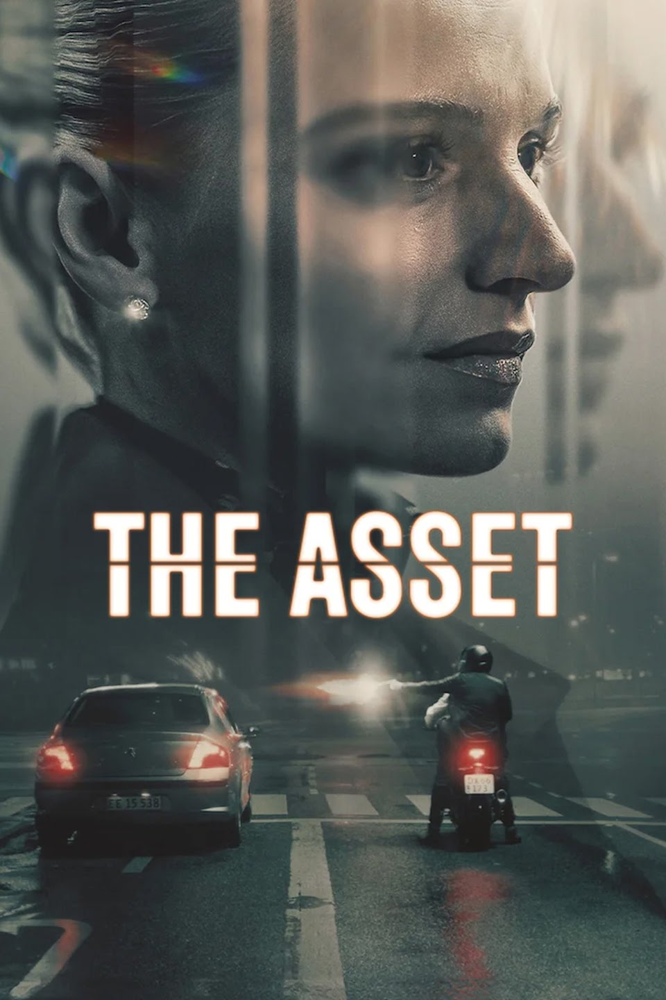
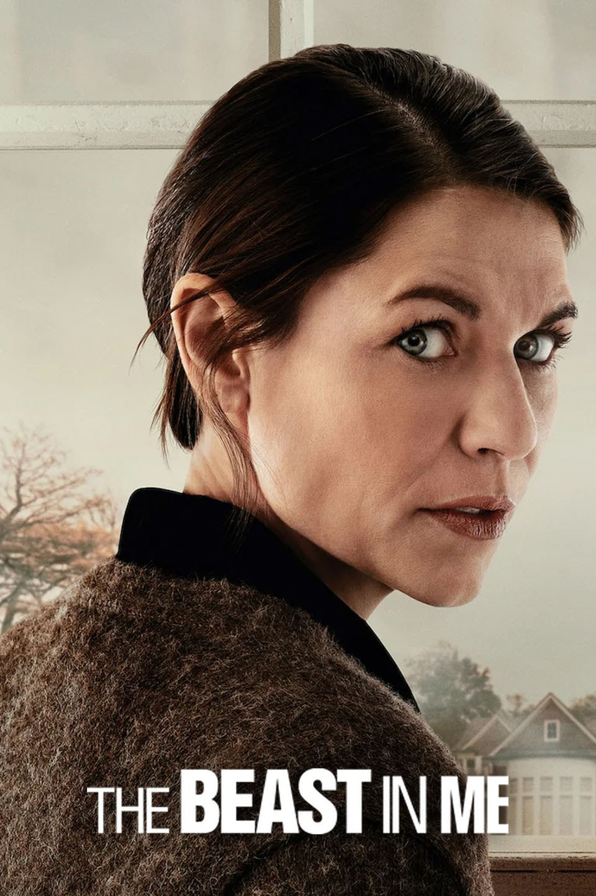

The Asset
The Asset (Danish: Legenden) is a Danish-language espionage crime drama that premiered globally on Netflix on 27 October 2025. It was directed by Samanou Acheche Sahlstrøm and Kasper Barfoed. Sahlstrøm was also head writer of the series along with Frederik Ringtved and Adam August. The leading role of Tea Lind is played by Clara Dessau. Tea Lind is a troubled police cadet who is recruited by the Danish Security and Intelligence Service (PET), to go undercover in the criminal underworld. Tea poses as a jeweler to befriend Ashley, the girlfriend of crime-boss Miran, with the goal of infiltrating his organization. But the deeper Tea becomes involved, the more the lines between her mission and her identity blur.
0

The Beast in Me
The Beast in Me is an American psychological crime thriller television miniseries for Netflix, starring Claire Danes and Matthew Rhys. Created by Gabe Rotter, the series follows an author (Danes) who begins writing a book about her new next-door neighbor (Rhys), a real estate executive who allegedly killed his wife. Executive producers on the series include Jodie Foster and Conan O'Brien. The series premiered on November 13, 2025, and received generally positive reviews.
0
Rulers of Fortune
Rulers of Fortune is a Netflix crime thriller series about an underdog named Profeta who tries to take over Rio de Janeiro's criminal gambling syndicate from powerful families. The show follows his dangerous rise through the world of illegal gambling, navigating a treacherous landscape of betrayal, lust, and deceit. The narrative centers on the power struggle between established crime families and Profeta's ambition to control the city.
0
Scandal Eve
Scandal Eve is a 2025 Japanese mystery drama about a talent agency president who must race against time to stop a tabloid from publishing a career-ending scandal about her client. The show stars Kô Shibasaki as the agency president, and the plot involves her clashing with the determined reporter and digging into a larger conspiracy within the entertainment industry. The series is available to stream on Netflix.
0
The Seduction
The Seduction (know as Merteuil in France) is a French television series created by Jean-Baptiste Delafon, based on Pierre Choderlos de Laclos's epistolary novel Les Liaisons dangereuses. It stars Anamaria Vartolomei, Diane Kruger, Vincent Lacoste, and Lucas Bravo. The series is both a prequel and a loose adaptation of the plot of the novel, and follows Isabelle de Merteuil (Vartolomei) as she is trying to get revenge on the Vicomte de Valmont (Lacoste) after he betrayed her. The series production was announced by HBO Max in September 2024 with Nabi Productions and Felicita Films serving as producers. Filming took place mainly in Val-d'Oise between September and December 2024. Originally announced as an Max Original, it was rebranded as an HBO Original in October 2025. The Seduction premiered in France on 14 November 2025 on HBO Max's HBO hub.
0